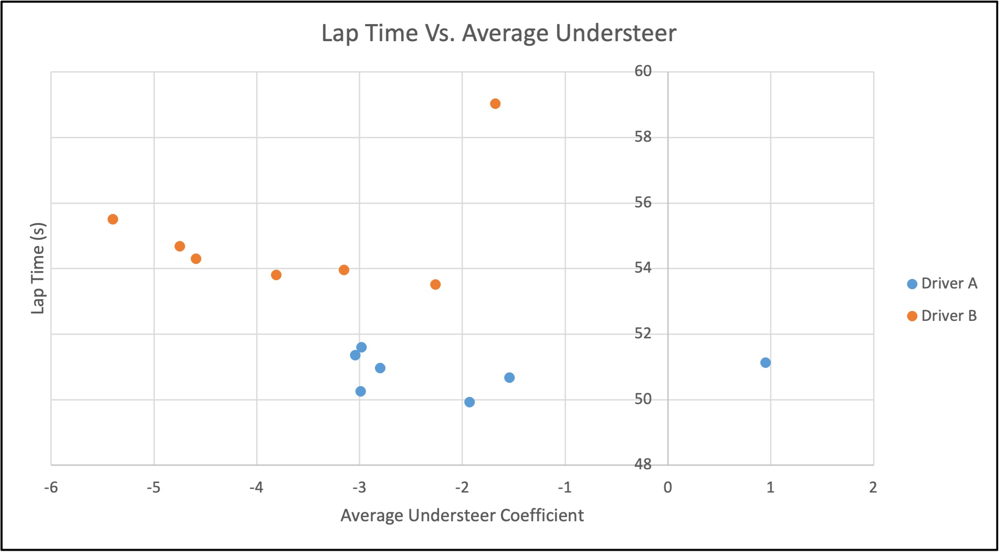
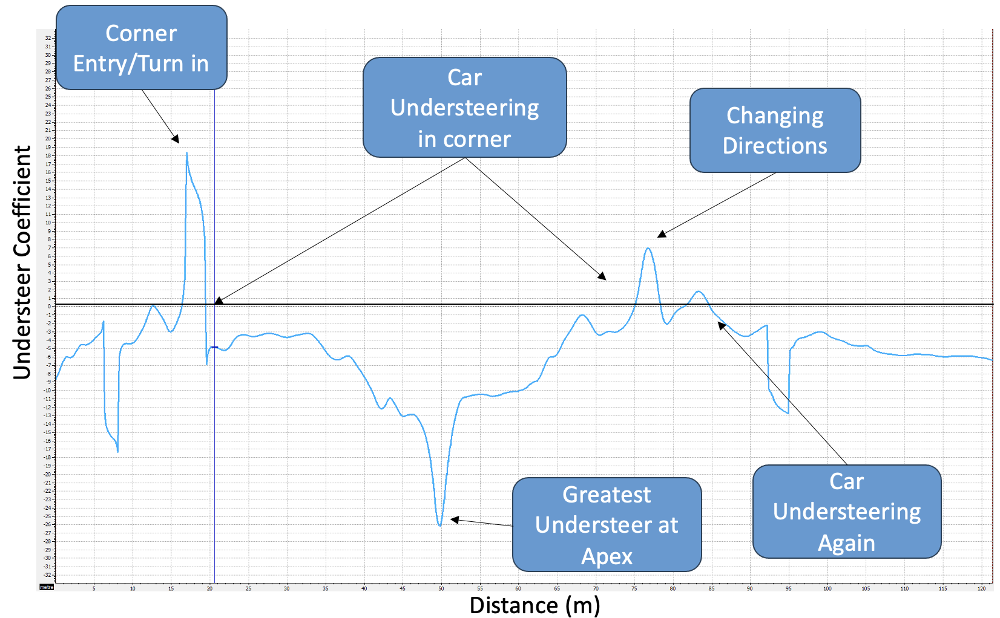
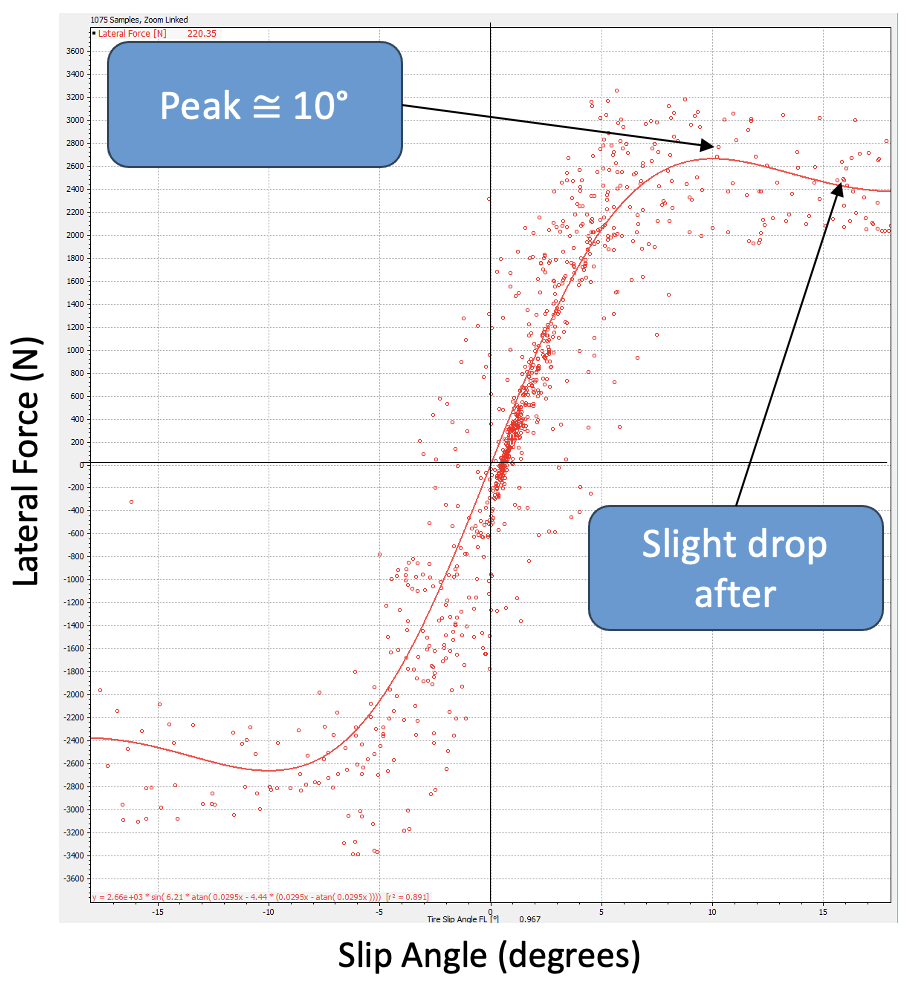
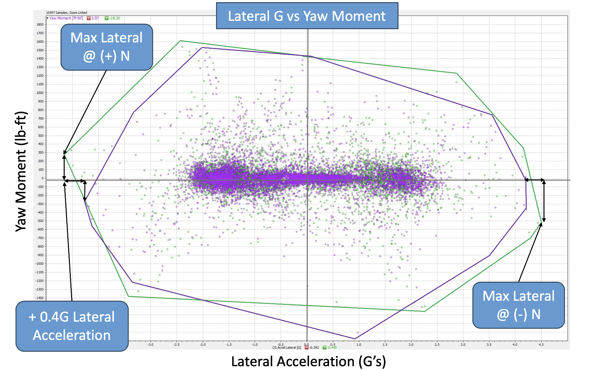

Motorsport Data Analysis Tools
Tools to make data easier to use during and after testing: MoTeC i2 math channels that quantify vehicle handling at the track, and automated reports covering powertrain, vehicle dynamics, driver inputs and aerodynamics.

The problem
In sim racing and in Formula Student, I kept seeing data get recorded and then never used. When someone did open a log during testing or for a project, they often didn't know what they were looking at or what it meant. Handling was judged almost entirely from driver feedback, and most Formula Student drivers aren't experienced enough for that to be reliable.
What I built
There are two parts. The first is a MoTeC i2 workbook with custom math channels, so a log can be pulled and reviewed at the track with no extra software. It turns raw sensor data into handling metrics: chassis side slip, tire slip angles, understeer coefficient and yaw moment. The second is a set of MATLAB scripts that sort a session's data into powertrain, vehicle dynamics, driver and aerodynamics sections and write a Word report that can be shared after testing.
Most of the channels build on chassis side slip (β). It comes from integrating the difference between the measured yaw rate and the yaw rate expected from speed and lateral acceleration. The integral drifts, so it only runs while the car is steering and resets when lateral acceleration is close to zero:
Checked against Assetto Corsa's true slip angle, the calculated value stayed within about ±1° and followed the same trend without added noise.
Results



Automated reports
Each subsystem gets a channel report in i2, with one column per lap. In each row the lowest value is blue and the highest is red, so trends show without scrolling through traces. In the session behind Fig. 1, lap 7 was fastest. Its column is mostly red: highest average throttle, top speed, average speed and brake pressure, with an average understeer coefficient of −1.93. The engine report does the same for the powertrain team, flagging out-of-range temperatures and pressures by outing.
After a session, the MATLAB scripts compile the same channels into a Word report for anyone who wasn't at the track. The report below was generated automatically from my own test stint in the Cadillac V-Series.R on iRacing at Watkins Glen, run to prepare for a National Association of Intercollegiate Racing event there.
The driver
The driver is a complex part of the system, and no two are the same. Most Formula Student drivers have little racing experience beyond karting and sim racing, so the gap between two drivers on one team can be large.
That matters most in endurance, where two drivers share one car and there's no time for a setup change at the driver swap. Fig. 1 shows the trade-off. A looser car might gain Driver A a little time, but it would cost Driver B much more and raise the risk of a spin. Setting the car up for the limiting driver gives the lower total endurance time, and Driver A can adapt.
Much of this was developed as part of my capstone on vehicle handling characterization. The instrumentation and validation are covered on the capstone project page →